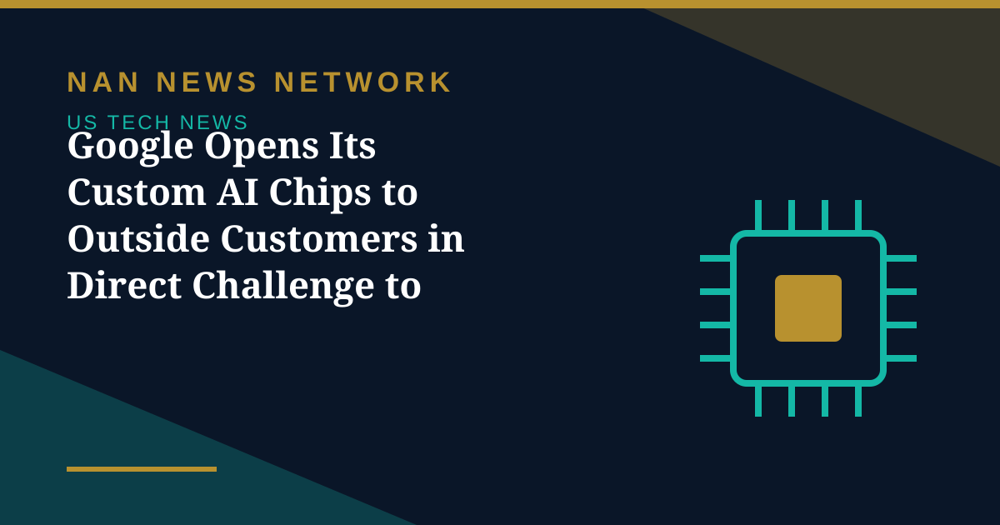

Google Opens Its Custom AI Chips to Outside Customers in Direct Challenge to Nvidia

Google expanded its custom AI chip business to external customers on Monday, November 11, opening a new front in the market for the processors that power artificial intelligence, The Korea Herald reported.
Two new eighth-generation systems
Google unveiled two new eighth-generation systems, the TPU 8i Max and the TPU 8tx, bringing its current lineup to four. The 8i Max doubles computing performance and memory capacity, while the 8tx targets AI workloads that require stronger data security. Google now has nearly 100 TPU customers, and Oracle plans to offer the chips through its cloud platform next year.
A new opening for Samsung and SK hynix
The move creates new opportunities for Samsung Electronics and SK hynix to diversify their high-bandwidth memory demand beyond the dominant Nvidia ecosystem, with Counterpoint Research forecasting HBM demand to grow 35-fold by 2028. Google is also working with MediaTek on the TPU 8t, codenamed Zebrafish, which the company says could cut HBM costs by 15 to 20 percent.
Sources: The Korea Herald, November 11, 2026; The World of AI, November 14, 2026
More on US Tech News
- Nvidia Chip Row Escalates as Bessent Blames Lutnick and Malaysia Opens Diversion Probe
- Cerebras Shares Surge 17% on Profit Surprise, Raised Forecast and Microsoft Deal
- Applied Materials Posts Record Quarter, Sees Chip Equipment Demand Rising Over 30% Next Year
- Nvidia CEO Jensen Huang Resigns Amid Affair and Espionage Probe
- IBM Unveils Nighthawk r3 Quantum Chip, Targets 1,040-Qubit System in 2027
- Anthropic Answers OpenAI With Claude Sheets, Meetings and Data as AI Rivals Chase Google and Microsoft
- CoreWeave Shares Jump After Q3 Revenue Surges 168% to $3.66 Billion
- Nvidia and Jensen Huang Sued by Shareholders Over Alleged Chinese Spy Affair
- Crypto Hacks Near $9 Billion in 2026 as Exchanges Keep Getting Breached
- Anthropic Strikes $3.4 Billion Gas-Generator Deal to Power Its AI Data Centers
- AI System Proves 18-Year-Old Quantum Conjecture in Three Days
- Claude Code 'Don't Ask Again' Flaw Leaks Live Passwords Into 1,122 Public GitHub Repos
- Anthropic to Kick Off IPO Roadshow at $1.25–$1.75 Trillion Valuation
- OpenAI Secures $11 Billion in Funding at a $1.25 Trillion Valuation
- Google DeepMind's AI Agents Expose Weaknesses in Legacy 1024-Bit RSA Encryption
- NASA Unveils X-70 Fractal, a New Experimental Aircraft Built to Test Next-Generation Flight
- Justice Department Launches Super Intelligence Task Force to Fight AI Fraud and Hacks
- Qualcomm Falls on Revenue Miss and Weak Guidance as Arm Beats but Stays Cautious
- Nvidia's November 17 Earnings: the $108 Billion Test That Will Set the AI Trade's Tone
- AMD Revenue Jumps 45% to $13.38 Billion as Data Centre Sales Nearly Double
- Arista Revenue Jumps 58.5% to $3.66 Billion, Its Fastest Growth Since the IPO
- Apple Posts Record $114.5 Billion Quarter — Then Shares Fall on Margin Warning
- Palantir Revenue Jumps 96% to $2.31 Billion as US Commercial Sales Pass Government
- Apple's $113 Billion Earnings Test: What to Watch in Ternus's First Call
- Palantir's $2.18 Billion Earnings Test After a 6% Pre-Report Slide
- Apple Passes Nvidia as World's Most Valuable Company at $5.03 Trillion
- Apple and Alibaba Bring Qwen AI to Apple Intelligence in China
- Nasdaq Suffers Worst Day Since June as Intel Plunges 29% on AI Spending Fears
- AI Giants Pledge a Single 'No Scraping' Tool for Publishers After Years of Complaints
- Amazon's AWS Jumps 39% to $46 Billion, but a $42.4 Billion Cash Outflow Sinks the Stock
- Intel Plunges About 25% as Weak Fourth-Quarter Guidance Overshadows a Third-Quarter Beat
- Microsoft Rises, Alphabet Falls: Free Cash Flow Becomes the AI Earnings Scorecard
- Nvidia Puts $3 Billion Into Meta as AI Partnership Deepens — and 'Circular' Worries Grow
- SK Hynix Profit Jumps More Than Sevenfold as AI Rally Faces Earnings Test
- Judge Orders OpenAI to Disclose Apple Hiring Records in Talent Dispute
- Apple Unveils M6 MacBook Pro and iMac With Faster On-Device AI
- OpenAI Launches GPT-6.1 Terra With Lower API Prices
- Musk Says SpaceX Closed $40 Billion in GPU Debt and Warns of a Neocloud Shakeout
- AI Inference Prices Have Fallen as Much as 80 Percent Since June, Analysis Finds
- White House Names Jay Clayton as AI Czar to Lead 'Super Intelligence Force'
- SpaceX Q3 2026: $14.6 Billion Revenue as Starship Flight 15 Targets a Dual-Stage Catch
- US Orders DeepSeek Stripped From Federal Civilian Systems